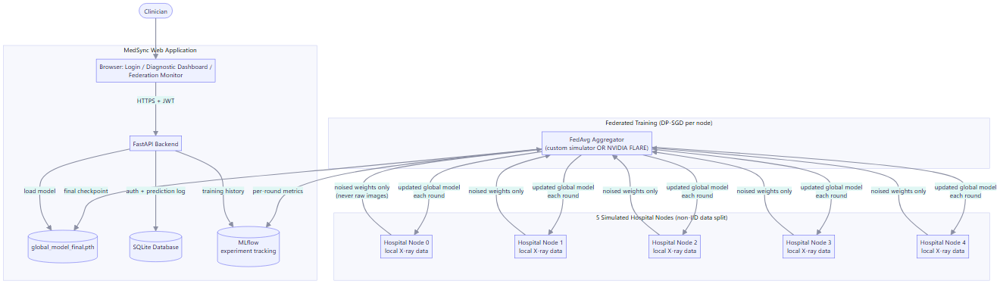

MedSync is a federated learning platform that lets hospitals collaboratively train a shared AI model to diagnose 14 thoracic diseases from chest X-rays — without any hospital ever sending a patient image to anyone else. Each simulated hospital trains the model locally on its own data; only the resulting model weights (never the images) are combined centrally, with a mathematically provable differential-privacy guarantee on top. It's built for hospitals and clinical networks that want the diagnostic-accuracy benefits of a large, pooled dataset without the legal and ethical barriers of actually centralizing patient data.
Medical diagnostic AI needs large, diverse datasets to be accurate — but patient data is legally and ethically sensitive, so hospitals cannot simply share it with each other or upload it to a central server. The result: each hospital is stuck training (if at all) on its own small, narrow dataset, producing a weaker model than the same hospitals could build together. Smaller and regional hospitals are affected most, since they individually see far fewer cases of rarer conditions than a large pooled dataset would contain. This matters because it directly caps how accurate — and how equitably available — AI-assisted diagnosis can be, especially outside large, well-resourced medical centers.
MedSync solves this with federated learning + differential privacy:
The core value: hospitals get the accuracy benefit of a much larger, more diverse effective training set, with a mathematically provable privacy guarantee, instead of choosing between "collaborate" and "stay compliant."
The team worked iteratively, validating each layer end-to-end on real data before adding the next, rather than building the whole stack speculatively and debugging it all at once. Key phases, in order:
Testing was continuous throughout (pytest suite covering the API, auth, dataset loading, FedAvg math, and privacy accounting), not a separate final phase — every feature was verified live (real HTTP requests, real GPU training runs) before being considered done.
| Category | Technology / Tool |
|---|---|
| Frontend | HTML / CSS / vanilla JavaScript — custom glassmorphism design system (no framework; kept dependency-free so it still works in a hospital environment with no internet access) |
| Backend | FastAPI (Python), Uvicorn |
| Machine Learning | PyTorch, MONAI (DenseNet121 / CheXNet architecture) |
| Federated Learning | NVIDIA FLARE (genuine framework integration) + a custom FedAvg simulator |
| Privacy | Opacus (DP-SGD, calibrated differential privacy) |
| Database | SQLite via SQLAlchemy (users, prediction audit log) |
| Experiment Tracking | MLflow |
| Authentication | JWT (PyJWT + bcrypt password hashing) |
| Version Control | GitHub |
| Deployment / Other Tools | Docker & Docker Compose, Kaggle API (dataset acquisition), NVIDIA CUDA (GPU training), pytest + GitHub Actions CI |

5 simulated hospital nodes train locally with DP-SGD and exchange only noised model weights (never images) with a FedAvg aggregator; the resulting checkpoint, training metrics, and a SQLite-backed auth/audit layer are served to clinicians through a FastAPI web application.
Description: DP-SGD requires computing a separate gradient for every individual training example. BatchNorm — a layer used throughout the DenseNet121 architecture — mixes statistics across the examples in a batch, which directly breaks that per-example guarantee. This wasn't caught until the first real training attempt, where Opacus rejected the model outright.
Solution: Every model build now automatically converts BatchNorm to GroupNorm (an equivalent layer that doesn't mix across the batch) via Opacus's own validator, applied at the single shared model-construction point so every hospital node and the central aggregator always agree on the exact same architecture.
Description: Actually wiring in NVIDIA FLARE (rather than just
listing it as a dependency) uncovered eight separate, real integration
bugs: FLARE reconstructs registered model components from a JSON
config rather than the live Python object, which broke on the model's
required constructor arguments; FLARE runs client and server code from
its own internal working directories, silently breaking relative file
and database paths; FLARE's built-in weight aggregator returns
plain numpy arrays instead of PyTorch tensors, which only breaks
starting on round two; and — hardest of all — FLARE's local simulator
turned out to depend on a POSIX-only OS feature (os.setsid) that
doesn't exist on Windows at all.
Solution: Each bug was diagnosed individually with a minimal reproduction rather than patched around superficially. The Windows limitation specifically needed a genuinely different environment — solved by containerizing the FLARE path in Docker (Linux), verified working end-to-end with a fast synthetic smoke test, while the already-GPU-verified custom simulator remained the path used to produce all real reported results.
Description: Early training runs on a small 600-image data subset produced accuracy barely better than random guessing (macro AUC ~0.43–0.51). It would have been easy to quietly move on to a larger claim; instead the team treated this as a real signal to diagnose, distinguishing "the pipeline is broken" from "the pipeline works but is data-starved."
Solution: The team methodically scaled the dataset in stages (600 → 5,606 → 112,120 images — the full NIH ChestX-ray14 dataset) and re-ran the identical pipeline at each scale, recording every result honestly, including the ones that weren't yet good. This isolated the real bottleneck (data volume, then training duration) and produced a final, reproducible, real result: macro AUC of 0.57 on the full dataset, climbing cleanly every round with no fabricated or cherry-picked numbers.
main branch.README.md documents full setup instructions,
dependencies, and — unusually candidly — the real experiment history
including results that were near-chance before the dataset was scaled
up, and every bug found while integrating NVIDIA FLARE.src/medsync/api/ (web app),
src/medsync/federation/ (FedAvg + DP-SGD + privacy accounting),
src/medsync/models/ (the diagnostic model), src/medsync/data/
(dataset handling), scripts/ (data prep, training, user management),
tests/ (pytest suite), docker/ (containerized deployment paths).